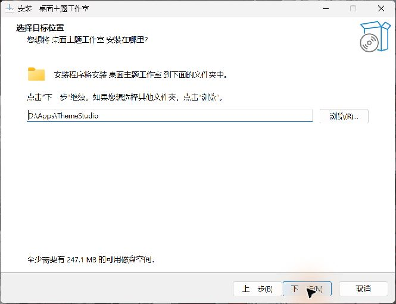
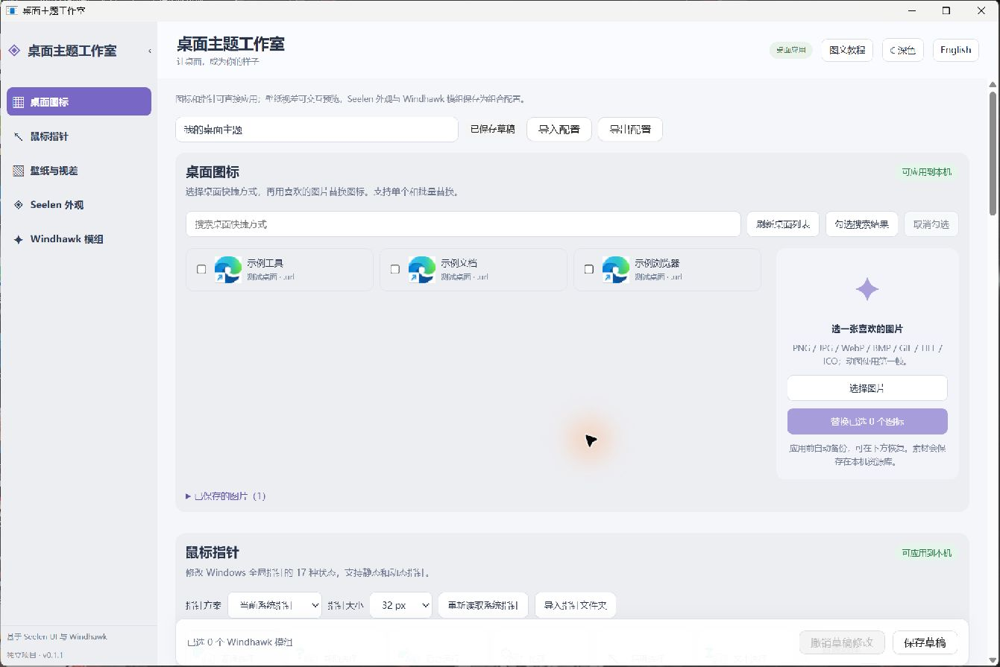
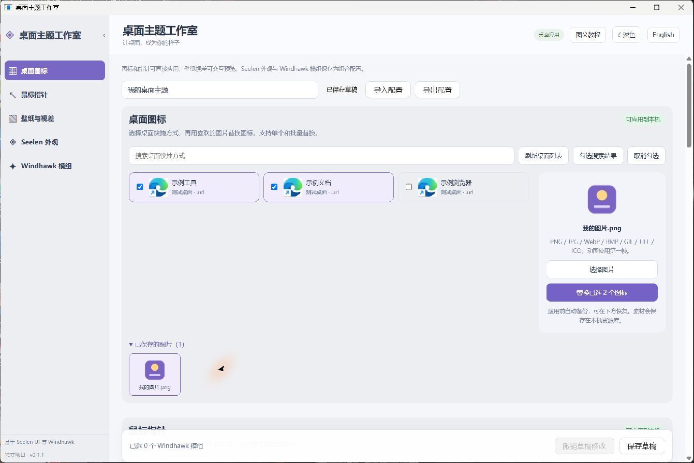
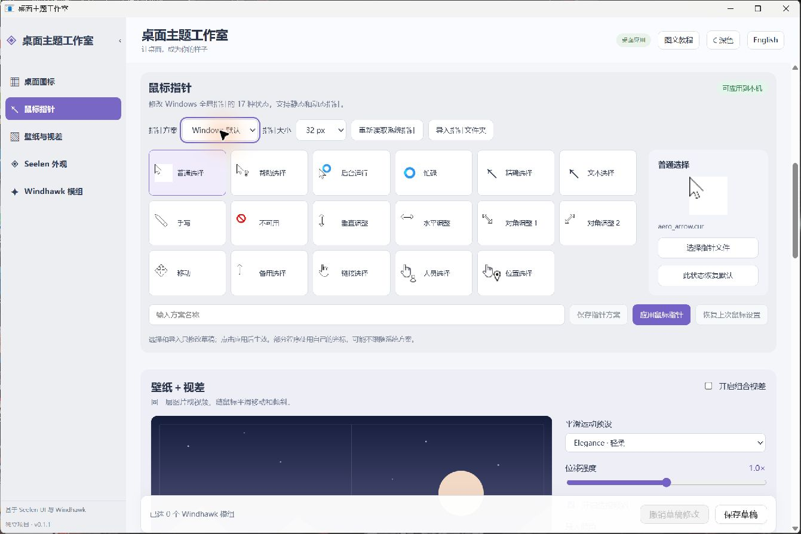
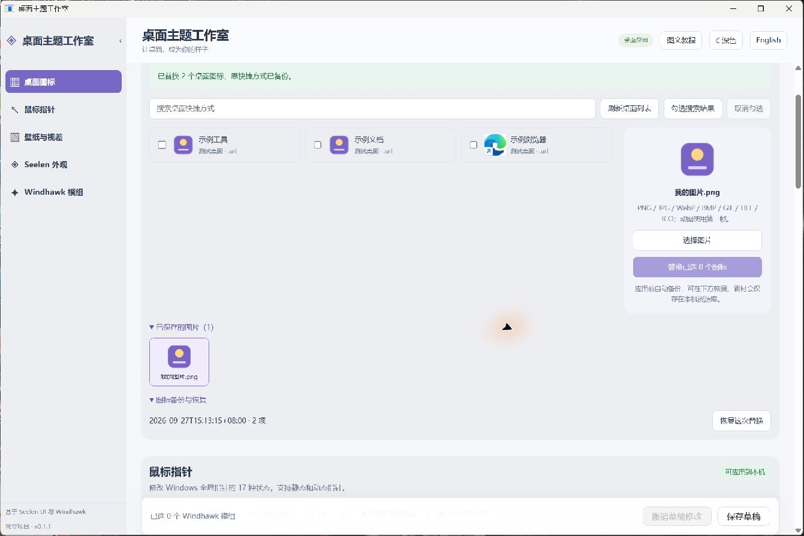
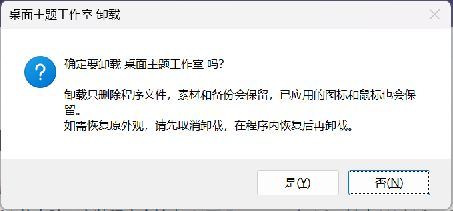

恢复图标
展开“图标备份与恢复”，找到对应时间和数量，点击“恢复这次替换”。如果之后又替换过同一项目，先恢复较新的批次。
THEME STUDIO · 0.1.1
从安装开始，用自己的图片更换桌面快捷方式图标，配置鼠标指针，并随时恢复。
01 / INSTALL
将 ThemeStudio-0.1.1-Windows-x64-Setup.exe 复制到目标电脑，双击运行。使用 Windows 10（2004 / 19041 或更新版本）或 Windows 11，推荐 Intel / AMD 64 位电脑。安装程序会检查 .NET Framework 4.8；缺少 WebView2 时，使用包内的微软官方离线运行库补齐。
D:\Apps\ThemeStudio。请选择当前账户能写入的位置。
02 / WORKSPACE
左侧导航可定位到“桌面图标”“鼠标指针”“壁纸与视差”“Seelen 外观”和“Windhawk 模组”。右上角“图文教程”可随时打开本说明，也可切换深浅色。导航只是页内定位，已经编辑的项目不会因切换区域而丢失。

“保存草稿”记录 Seelen / Windhawk / 视差的组合参数；图标和鼠标在各自区域点击“应用”后才改变 Windows。图标素材和指针方案保存在本机资源库。
03 / DESKTOP ICONS

动态图使用第一帧。默认等比保留图片并透明补齐，支持透明 PNG；单文件不超过 32 MB、图片不超过 4000 万像素。素材会复制到本机库，原图片移动或删除后，已应用图标仍能使用。
04 / MOUSE POINTERS
.cur 或 .ani。
部分游戏、绘图软件和网页会使用自己的光标，不一定跟随 Windows 系统方案。
05 / RESTORE
展开“图标备份与恢复”，找到对应时间和数量，点击“恢复这次替换”。如果之后又替换过同一项目，先恢复较新的批次。
点击“恢复上次鼠标设置”，返回上一次应用前的方案。程序会核对当前设置，避免覆盖其他软件后来做的修改。

如果提示“已被其他操作修改”，先核对当前设置再操作。不要直接删除素材库来恢复外观；删除素材只会让 Windows 找不到正在引用的文件。
06 / FEATURE STATUS
| 区域 | 0.1.1 当前作用 |
|---|---|
| 桌面图标 | 实际替换、备份和恢复 Windows 快捷方式图标。 |
| 鼠标指针 | 实际应用和恢复 17 状态系统鼠标方案。 |
| 壁纸与视差 | 在页面预览图片/视频随鼠标平移和倾斜，尚未应用到真实桌面背景。 |
| Seelen 外观 / Windhawk 模组 | 选择资源、查看源码、保存组合配置；不表示相应桌面组件或模组已经安装启用。 |
“导出配置”生成主题参数 JSON，不是完整素材包。换电脑时重新选择那台电脑的快捷方式和素材，不要直接拿旧电脑的快捷方式路径应用。任务栏、Dock 等重叠功能的提供者仍待用户选择。
07 / UNINSTALL

%LOCALAPPDATA%\ThemeStudio 默认保留；重新安装后可继续使用其中的素材和备份。共享的 Microsoft WebView2 运行库也保留，其他应用可能仍在使用它。卸载程序不会自动撤销已应用的图标或鼠标。
08 / HELP
%LOCALAPPDATA%\ThemeStudio\exports。%LOCALAPPDATA%\ThemeStudio\diagnostics。安装日志位于 %TEMP%，文件名以 Setup Log 开头，会记录运行库执行结果；不要删除自己的素材和备份来排查。